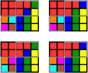

|  |
Schubert Galois groups in the Grassmannian G(4,9)Abraham Martín del Campo, Frank Sottile, and Robert Williams. |
| This page accompanies the article
Classification of Schubert Galois groups in Gr(4,9), providing software and additional information on the computations. |
| Last modified: Thu Dec 2 19:51:18 CST 2019 |